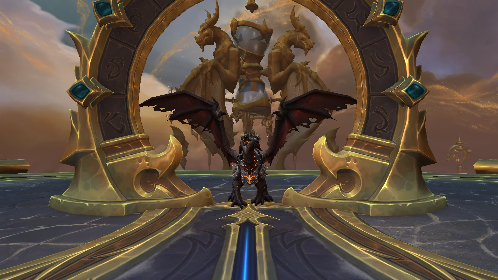

나에 대해 조금 말하자면

저는 마르코스예요.
저는 어린 시절 내내 기술에 매료되었습니다. 그 이후로 그 매력에 사로잡혀 사이버 보안에 중점을 둔 웹 프로그래머가 되었습니다.
하지만 제 삶에는 모든 것이 코드가 아니라 몇 가지 측면도 있습니다. 개인적으로 자전거 타기와 독서를 좋아하고 오늘날의 모든 젊은이들처럼 비디오 게임을 즐깁니다.

사이클링
이 스포츠에서 제가 좋아하는 점은 자유로움을 느낄 수 있다는 것입니다. 안장 가방 한 켤레를 챙겨 4일 동안 산을 탐험하거나 30분이라는 짧은 휴가를 보낼 수 있는 곳이죠.

읽기
반면 사이클링과 달리 독서는 또 다른 자유를 선사합니다. 아름다운 판타지 배경부터 기괴한 장면까지 모든 것을 상상할 수 있는 곳입니다. 하지만 과거로, 어쩌면 미래로 여행을 떠나기도 하죠. 그곳은 가능성이 무궁무진한 왕국입니다.

비디오 게임
다시 말해, 비디오 게임은 이 기괴한 서사적 장면에서 한 걸음 더 나아간 셈입니다. 이제 수백 명의 사람들이 여러분처럼 어울려 판타지를 즐기고 있습니다.